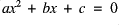
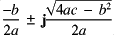
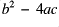

As you have seen in earlier tutorials, Osiris provides the ability to extend it's functionality through "utilities". These can provide mathematical features not related to graphs or a quick way to plot a commonly used graph. This tutorial describes how you can write your own utilities using the Program application built into your Psion, with only some experience of OPL. As an example, we shall see how the Quadratic Equation Solver was written.
If you would like more information on how to program, you should consult the "Programming Manual" which was supplied with some Psion computers or available direct from Psion. An alternative source of programming information is the 3-Lib website at www.3-lib.co.uk .
When you originally installed Osiris, a file called "Utility.opl" should have been placed into your OPL directory if you copyed everything across correctly - it should appear in the list beneath the "Program" icon. This file provides a template which you can use to write your own utilities.
The file should contain the following:
PROC startutl:
REM Your main program code
ENDP
PROC title$:
REM Return the name of your utility
RETURN ""
ENDP
The procedure title$: as the name suggests, simply returns the name of the utility for Osiris to show in the Utility list. To be consistant, the title should have the first letter capitalised and the remainder in lower case.
The startutl: procedure is called by Osiris when the utility is run from the "Utility" option in the "Tools" menu. The utility is only loaded into memory when required and unloaded immediately after it has finished. Utilities are relatively protected - normal errors in a utility will not bring down Osiris but panics will.
The real solutions for the quadratic equation

are given by the formula
If , the solution has no real roots, but complex roots are given by

The utility must:

.To construct the startutl: procedure, we must first decide on our variables. One should choose meaningful names where possible, and in the context of this utility the below seem the logical choice.
LOCAL a,b,c,a$(255),b$(255),c$(255),dret%,er$(50)
As we shall be using the EVAL keyword, we should make sure that an error handler is in place. If this is not done, any errors from this will cause the utility to stop with a "Error in utility" message - not very user-friendly! In addition, we shall provide the ability to display an error message to help the user identify the problem.
ONERR quaderr::
quaderr::
IF er$<>"" :GIPRINT er$ :ENDIF
We need to declare extra string variables for a,b and c in order to use dEDIT in the dialog. Doing so allows the user to type in an expression rather than a value. In this case, the user may wish to specify their values in terms of constants which they have defined. This technique is strongly recommended to the programmer in developing Utilities on account of extra usability and consistancy with Osiris's user interface.
Our utility must first get the values of a,b and c and we shall use a dialog to do this. We shall need the value returned by DIALOG later, so this is stored in the variable dret%. More advanced programmers may be concerned at the lack of LOCK ON and LOCK OFF around the DIALOG line - these are not necessary as they are called before and after the utility is run.
dINIT "Quadratic equation solver"
dTEXT "","A quadratic equation has the form:",0
dEDIT a$,"Value for a",20
dEDIT b$,"Value for b",20
dEDIT c$,"Value for c",20
dBUTTONS "Cancel",27,"Find x",13
dret%=DIALOG
If the user chose to "Find x" from the dialog, we need to transfer the contents of a$, b$ and c$ to the variables a, b and c making them numbers on the way. Osiris allows a utility to replace any constants the user may have included with appropriate numbers so that the utility can then simply EVAL the result by means of the pre-processor. This is invoked by calling the pproces$:(string$) procedure where string$ is the string to pre-process. The result can be stored in another string or EVALuated. The pre-processor also converts a number of extra operators and functions into a form which can be EVALuated - the use of these can be completely transparent to the utility.
If the pre-processor finds an error, a non-existant constant for example, it will return the string "ERROR". We do not need to worry about this at this stage as this will simply cause the EVAL function to raise an error throwing the program back to the beginning. If we set er$ before each EVAL then we can also display an error message indicating where the problem lies.
IF dret%=13
er$="Error in a"
a=EVAL(pproces$:(a$))
er$="Error in b"
b=EVAL(pproces$:(b$))
er$="Error in c"
c=EVAL(pproces$:(c$))
ONERR OFF
Based on this, the program needs to decide whether the roots are complex and display them. We shall test whether and generate appropriate dialogs.
IF (b**2-4*a*c)<0 :REM Roots are complex
dINIT "Complex Roots"
dTEXT "x=",GEN$(-b/(2*a),10)+" + i("+GEN$(SQR(4*a*c-b**2)/(2*a),10)+")"
dTEXT "or x=",GEN$(-b/(2*a),10)+" - i("+GEN$(SQR(4*a*c-b**2)/(2*a),10)+")"
ELSE
dINIT "Real Roots"
dTEXT "x=",GEN$((-b+SQR(b**2-4*a*c))/(2*a),10)
dTEXT "or x=",GEN$((-b-SQR(b**2-4*a*c))/(2*a),10)
ENDIF
We also want to offer the user a chance to plot a graph in both cases, so we shall add buttons to do this.
dBUTTONS "Plot Graph",%p,"Continue",27
dret%=DIALOG
To actually plot the graph we need to use one of Osiris's library routines inserteq:(type$,eq$,pc%,ll,ul,st) which adds an equation to the list. The meaning of the parameters which this takes are explained below.
| type$ | The plugin identity string which identifies what is to be plotted. This is "1" for a Cartesian equation, "2" for a Polar equation, "3" for parametric equations and "4" for a data point. Note that the format for data points is significantly different from the other plugins. |
| eq$ | The equation(s) to be plotted, eg "SIN(x*2*#pi)" for a Cartesian equation. For parametric equations, the two equation should be separated by the "Tab" character CHR$(9) with the x equation first. For data points, this should be the X ordinate as a string. |
| pc% | The plot colour of the item, 1 for Black and 2 for Grey. |
| ll | The lowest value of the parameter. This is ignored for Cartesian equations For data points, this should be equal to the value of the absolute error in the X value |
| ul | The highest value of the parameter. This is ignored for Cartesian equations For data points, this should be equal to the Y ordinate. |
| st | The step or interval by which the parameter is increased at speed 1. This is ignored for Cartesian equations For data points, this should be equal to the absolute error in the Y value. |
IF dret%=%p
inserteq:("1",GEN$(a,10)+"*x^2+"+GEN$(b,10)+"*x+"+GEN$(c,10),1,FLT(0),FLT(0),FLT(0))
GIPRINT "Added quadratic equation"
ENDIF
ENDIF
ONERR OFF
Note the use of FLT to protect the types of the arguments passed. The utility is now complete - you can translate it with "Translate" from the "Prog" menu in Program (PSION-T). If you choose to run the program, it will not work correctly as the Osiris routines are not present. Nonetheless, you should usually run the program in this way as a quick check that there are no major errors: mis-typed variable names, for example, can be quickly rooted out if you get the "Undefined externals" error.
You must now copy the translated file from the "\OPO" directory to the "\APP\Osiris" directory.
Once the copying is complete, move to (or start) the Osiris application. If you select "Utility" from the "Tools" menu, you should see that the "Quadratic equation solver" has appeared. If it was already installed (from when you installed the complete package), you should get a second copy listed. Try running it!
Please check your typing very carefully - have you followed all the instructions? If the utility stops unexpectedly, Osiris will show an error message. This should help you find the error: "Undefined Externals" usually means you mistyped a variable name for example.
If you still can't see the problem, the complete source is provided in the "Tutorials" directory of the ZIP archive as the file "Quadsrc.opl". You can open this with a text editor or, indeed, the Program application. Check your copy line by line.